측량및지형공간정보산업기사 (2013-09-28 기출문제)
1과목: 응용측량
1. 종ㆍ횡단 고저측량에 의하여 얻어진 각 측점의 단면적에 의하여 작성되는 유토곡선의 성질에 대한 설명으로 옳지 않은 것은?
- 유토곡선의 하향 구간은 성토구간이고 상향 구간은 절토구간이다.
- 곡선의 저점은 절토에서 성토로, 정점은 성토에서 절토로 바뀌는 점이다.
- 곡선과 평생선(기선)이 교차하는 점에서는 절토량과 성토량이 거의 같다.
- 절토와 성토의 평균운반거리는 유토곡선 토량의 1/2점간의 거리로 한다.
(정답률: 60%)

2. △ABC에서 ㉮ : ㉯ : ㉰ 의 면적의 비를 각각 4 : 2 : 3 으로 분할할 때 EC 의 길이는?
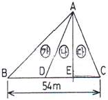
- 10.8m
- 12.0m
- 16.2m
- 18.0m
(정답률: 80%)
3. 하천 측량에서 유속을 측정하고자 할 때 2점법에 의한 하천의 평균유속(Vm)을 구하는 식으로 옳은 것은?
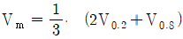
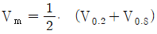
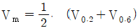
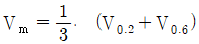
(정답률: 78%)
4. 하천측량에서 하천 양안에 설치된 거리표, 수위표, 기타 중요 지점들의 높이를 측정하고 유수부의 깊이를 측정하여 종단면도와 횡단면도를 만들기 위한 측량은?
- 평판에 의한 지형측량
- 트래버스측량
- 삼각측량
- 수준측량
(정답률: 70%)
5. 3각형의 3변의 길이가 a = 40m, b = 28m, c = 21m 일 때 면적은?
- 153.36m2
- 216.89m2
- 278.65m2
- 306.72m2
(정답률: 75%)
6. 원곡선에서 곡선반지름 R = 200m, 교각 I = 60°, 종단현 편각이 0° 57′ 20″ 일 경우 종단현의 길이는?
- 2.676m
- 3.287m
- 6.671m
- 13.342m
(정답률: 80%)
7. 터널내 곡선 설치 방법으로 가장 거리가 먼 것은?
- 편각법
- 접선편거법
- 내접다각형법
- 외접다각형법
(정답률: 64%)
8. 단곡선 설치에 관한 설명으로 틀린 것은?
- 교각(I)이 일정할 때 접선장(T.L)은 곡선반지름(R)에 비례한다.
- 교각(I)과 곡선반지름(R)이 주어지면 단곡선을 설치할 수 있는 기본적인 요소를 계산할 수 있다.
- 편각법에 의한 단곡선 설치시 호길이(ℓ)에 대한 편각(δ)을 구하는 식은 곡선반지름을 R이라 할 때
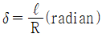
이다. - 중앙종거법은 단곡선의 두 점을 연결하는 현의 중심으로부터 현에 수직으로 종거를 내려 곡선을 설치하는 방법이다.
(정답률: 67%)
9. 클로소이드 매개변수 A = 60m인 곡선에서 곡선길이 L = 30m 일때 곡선 반지름(R)은?
- 150m
- 120m
- 90m
- 60m
(정답률: 87%)
10. 지하시설물 탐사작업의 순서로 옳은 것은?
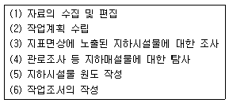
- (2) - (1) - (3) - (4) - (5) - (6)
- (1) - (5) - (3) - (4) - (2) - (6)
- (2) - (1) - (4) - (5) - (3) - (6)
- (1) - (3) - (4) - (2) - (6) - (5)
(정답률: 82%)
11. 교각 I = 80°, 곡선반지름 R = 200m인 단곡선의 교점 I.P 의 추가거리가 1250.50m 일 대 곡선시점 B.C의 추가거리는?
- 1382.68m
- 1282.68m
- 1182.68m
- 1082.68m
(정답률: 74%)
12. 그림과 같이 폭 15m 의 도로가 어느 지역을 지나가게 될 때 도로에 포함되는 □BCDE 의 넓이는? (단, AC의 방위 = N 23° 30′ 00″ E, AD의 방위 = S 89° 30′ 00″ E, AB의 거리 = 20m, ∠ACD = 90° 이다.)
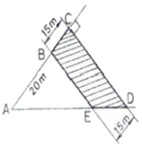
- 971.78m2
- 926.50m2
- 910.10m2
- 893.22m2
(정답률: 45%)
13. 노선 선정을 할 때의 유의사항으로 옳지 않은 것은?
- 노선은 될 수 있는 대로 경사가 완만하게 한다.
- 노선은 운전의 지루함을 덜기 위해 평면곡선과 종단곡선을 많이 사용한다.
- 절토 및 성토의 운반 거리를 가급적 짧게 한다.
- 토공량이 적고, 절토와 성토가 균형을 이루게 한다.
(정답률: 83%)
14. 경관을 시각적으로 판단하는데 있어서 판단의 기준이 되는 인자와 거리가 먼 것은?
- 음영
- 위치
- 크기
- 형태
(정답률: 58%)
15. 삼각형 토지의 면적을 구하기 위해 트래버스 측량을 한 결과의 배횡거와 위거가 표와 같을 때, 면적은 얼마인가?
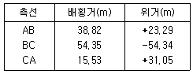
- 4339.06m2
- 2169.53m2
- 1084.93m2
- 783.53m2
(정답률: 65%)
16. 곡선 반지름 R = 500m인 원곡선을 설계속도 100㎞/h로 설계하려고 할 때, 캔트(Cant)는? (단, 궤간 b는 1067㎜)
- 100㎜
- 150㎜
- 168㎜
- 175㎜
(정답률: 64%)
17. 해양측량에서 해저수심, 간출암 높이 등의 기준은?
- 평균해수면
- 약 최고고조면
- 약 최저저조면
- 평수위면
(정답률: 48%)
18. 터널 내에서 차량 등에 의하여 파괴되지 않도록 견고하게 만든 기준점을 무엇이라 하는가?
- 시표(target)
- 자이로(gyro)
- 갱도(坑道)
- 도벨(dowel)
(정답률: 79%)
19. 터널 내 수준측량을 통하여 그림과 같은 관측 결과를 얻었다. A점의 지반고가 11m라면 B점의 지반고는?
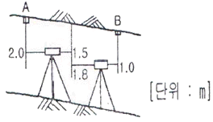
- 9.7m
- 9.0m
- 8.7m
- 8.0m
(정답률: 72%)
20. 수애선(水涯線)의 측량에 대한 설명으로 틀린 것은?
- 수면과 하안(河岸)과의 경계선을 수애선이라 한다.
- 수애선은 하천 수위에 따라 변동하는 것으로 저수위에 의하여 정해진다.
- 수애선의 측량에는 심천측량에 의한 방법과 동시관측에 의한 방법이 있다.
- 심천측량에 의한 방법을 이용할 때에는 수위의 변화가 적은 시기에 심천측량을 행하여 하천의 횡단면도를 먼저 만든다. 【 사진측량 및 원격탐사 】
(정답률: 79%)
2과목: 사진측량 및 원격탐사
21. C-계수 1200인 도화기로 축척 1:ㅣ30000 항공사진을 도화작업 할 때 신뢰할 수 있는 최소 등고선 간격은? (단, 초점거리 180㎜ 이다.)
- 4.5m
- 5.0m
- 5.5m
- 6.0m
(정답률: 70%)
22. 비행고도 6000m로부터 초점거리 15㎝의 카메라로 1500m 간격으로 촬영한 사진에서 비고가 172m 일 때 시차차는?
- 1.5⑤㎜
- 1.290㎜
- 1.075㎜
- 0.788㎜
(정답률: 35%)
23. 상호표정(relative orientation)에 대한 설명으로 옳지 않은 것은?
- 상호표정은 X 방향의 횡시차를 소거하는 작업이다.
- 상호표정은 Y 방향의 종시차를 소거하는 작업이다.
- 상호표정은 보통 내부표정 후에 이루어지는 작업이다.
- 상호표정을 하기 위해서는 5개의 표정인자를 사용한다.
(정답률: 64%)
24. 편위수정에 있어서 만족해야 할 3가지 조건으로 옳지 않은 것은?
- 샤임 프러그 조건
- 타이 포인트 조건
- 광학적 조건
- 기하학적 조건
(정답률: 67%)
25. 원격측정의 작업내용 중 화상의 질을 높이거나 태양입사각 등에 의한 영향을 보정해 주는 과정은?
- 자료변환 (data hanging)
- 복사관측 (radiometric) 보정
- 기하학적(geometric) 보정
- 자료압축
(정답률: 37%)
26. 원격탐사의 센서에 대한 설명으로 옳지 않은 것은?
- 선주사 방식에는 Vidicon(TV) 방식이 있다.
- 화상센서와 비화상센서가 있다.
- 수동적 센서에는 선주사 방식과 카메라 방식이 있다.
- 능동적 센서에는 Radar 방식과 Laser 방식이 있다.
(정답률: 61%)
27. 항공사진촬영에 대한 설명으로 옳지 않은 것은?
- 횡중복은 인접스트립간의 접합을 위한 것이다.
- 종중복은 인접사진과의 접합을 위한 것으로 보통 40% 정도를 중복시킨다.
- 사진이 촬영코스방향으로 연결된 것을 스트립이라 한다.
- 횡중복도는 보통 30% 정도로 한다.
(정답률: 71%)
28. 사진측량을 촬영 방향에 따라 분류할 때 지평선이 사진에 찍혀 있는 항공사진은?
- 수직 사진
- 수평 사진
- 저경사 사진
- 고경사 사진
(정답률: 74%)
29. 과고감에 대한 설명으로 옳은 것은?
- 지형의 높이차가 실제보다 작게 일어나는 현상이다.
- 사진의 촬영고도와 기선길이에 따라 다르다.
- 항공사진의 경우 과고감은 카메라의 종류에 따라 항상 일정하다.
- 사진의 중심으로부터 멀어질수록 변위가 커지는 현상이다.
(정답률: 60%)
30. 다음과 같은 영상에 3×3 평균필터를 적용하면 영상에서 행렬 (2,2)의 위치에 생성되는 영상소 값은?
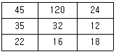
- 32
- 35
- 36
- 40
(정답률: 63%)
31. 초점거리 153㎜인 항공사진기를 이용하여 촬영경사 4°로 평지를 촬영하였다. 사진에서 등각점으로부터 주점까지의 길이는?
- 9.6㎜
- 7.4㎜
- 5.3㎜
- 3.2㎜
(정답률: 67%)
32. 사진을 조정의 기본단위로 하는 항공삼각측량 방법은?
- 광속(번들) 조정법
- 독입일체모형법
- 다항식법
- 스트립조정법
(정답률: 72%)
33. Pushbroom 방식의 항측용 디지털 카메라는 각 라인마다 기하학적 조건이 조금씩 변하기 때문에 각 라인에 대한 외부표정요소를 구해야 한다. 이를 위해 사용되는 장비는?
- LiDAR
- Radar
- GPS/INS
- Level
(정답률: 59%)
34. 파도가 없는 해수면을 SAR(Synthetic Aperture Radar) 영상으로 촬영하면 무슨 색으로 나타나는가?
- 파란색
- 검은색
- 흰색
- 붉은색
(정답률: 72%)
35. 편위수정에 대한 설명으로 옳지 않은 것은?
- 사진지도 제작과 밀접한 관계가 있다.
- 경사사진을 엄밀 수직사진으로 고치는 작업이다.
- 지형의 기복에 의한 변위가 완전히 제거된다.
- 4점의 평면좌표를 이용하여 편위수정을 할 수 있다.
(정답률: 70%)
36. 사진의 크기 23㎝×23㎝, 초점거리 25㎝, 촬영고도 800m 일 때 이 사진의 포괄면적은?
- 0.22km2
- 0.34km2
- 0.42km2
- 0.54km2
(정답률: 69%)
37. 소축척 도화용으로 많이 사용되는 카메라는?
- 협각카메라
- 보통각카메라
- 광각카메라
- 초광각카메라
(정답률: 76%)
38. 항공사진 측량에서 사진모델에 대한 설명으로 옳은 것은?
- 어느 지역을 대표할 만한 사진이다.
- 중복된 한 장의 사진이다.
- 편위수정이 완전히 끝난 상태의 사진이다.
- 중복된 한 쌍의 사진으로 입체시 할 수 있는 부분 사진이다.
(정답률: 79%)
39. 원격탐사 자료처리 중 기하학적 보정인 것은?
- 영상대조비 개선
- 영상의 밝기조절
- 화소의 노이즈 제거
- 지표기복에 의한 왜곡제거
(정답률: 86%)
40. 사진측량의 특징에 대한 설명으로 옳지 않은 것은?
- 지상측량에 비해 외업시간이 짧고 내업시간이 길다.
- 도상 각 부분과 기준점의 정밀도가 비슷하고 개인적인 원인에 의한 오차가 적게 발생한다.
- 측량구역의 면적이 적을수록 경제적이며 소축척보다는 대축척이 더욱 경제적이다.
- 지도는 정사투영상이나 사진은 중심투영상이다.
(정답률: 85%)
3과목: GIS 및 GPS
41. 수치표고모델 (DEM) 의 응용분야라고 보기 어려운 것은?
- 아파트 단지별 세입자 비율 조사
- 가시권 분석
- 수자원 정보체계 구축
- 절토량 및 성토량 계산
(정답률: 85%)
42. 임의 지점 A에서 타원체고(h) 25.614m, 지오이드고(N) 24.329m일 때 A점의 정표고(H)는?
- -1.285m
- 1.285m
- 24.329m
- 49.943m
(정답률: 83%)
43. 지리정보시스템(GIS) 데이터베이스를 구축할 때 지리데이터와 데이터모델 사이의 규칙과 일치성을 설명하는 것으로 옳은 것은?
- 논리적 일관성
- 위치 정확도
- 데이터 이력
- 속성 정확도
(정답률: 62%)
44. 격자를 벡터 형태로 바꾸는 정보처리기법에서 오류에 의해 발생하는 선 사이의 틈을 말하며, 두 다각형 사이에 작은 공간이 있어서 접촉되지 않는 다각형을 의미하는 것은?
- margin
- gap
- sliver
- over-shoot
(정답률: 76%)
45. GIS 자료의 주요 검수항목이 아닌 것은?
- 기하구조의 적합성
- 자료입력 기술자 등급
- 위치 정확도
- 속성 정확도
(정답률: 100%)
46. 지리저보자료의 구축에 있어서 표준화의 장점이라 볼 수 없는 것은?
- 경제적이고 효율적인 시스템 구축 가능
- 서로 다른 시스템이나 사용자간의 자료 호환 가능
- 자료 구축에 대한 주복 투자 방지
- 불법복제로 인한 저작권 피해의 방지
(정답률: 87%)
47. 도로명(새주소)을 이용하여 경위도 또는 X,Y 등과 같은 지리적인 좌표를 기록하는 것을 무엇이라 하는가?
- Geocoding
- Metadata
- Annotation
- Georeferencing
(정답률: 71%)
48. TIN에 대한 설명으로 틀린 것은?
- TIN 으로부터 규칙적인 격자형태의 수치표고모델 제작이 가능하다.
- 불규칙하게 분포된 위치에서 표고를 추출하고 삼각형으로 연결하여 지형을 표현한다.
- 자료의 처리량이 상대적으로 적어서 처리가 신속하다.
- 격자 방식보다는 정확하고 효과적인 지형의 표현이 가능하다.
(정답률: 84%)
49. GPS 단독측위에 필요한 최소 가시위성의 객수는?
- 2개
- 4개
- 6개
- 8개
(정답률: 62%)
50. GPS의 응용분야로 자동차에 GPS와 관성항법장치(INS), 그리고 CCD 카메라를 장착한 것으로 도로를 주행하면서 각종 정보를 수집하는 것을 무엇이라 하는가?
- CNS
- GPS Van
- Airbone GPS
- LiDAR
(정답률: 68%)
51. GPS 측량과 수준측량에 의한 높이값의 관계를 나타낸 내용이다. ( )안에 가장 적당한 용어로 순서대로 나열된 것은?
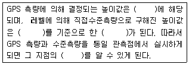
- 표고 - 타원체 - 지오이드고 - 비고
- 지오이드고 - 타원체 - 비고 - 표고
- 타원체고 - 타원체 - 지오이드고 - 표고
- 타원체고 - 지오이드 - 표고 - 지오이드고
(정답률: 55%)
52. GPS station 과 rover 사이의 공간적 변이가 △X = 200m, △Y = 300m, △Z = 50m 가 발생하였다면 수신기 간의 공간거리는? (단, GPS station 과 rover 의 높이(h)는 같다.)
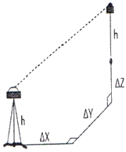
- 234.52m
- 360.56m
- 364.01m
- 370.12m
(정답률: 64%)
53. GIS의 특징에 대한 설명으로 틀린 것은?
- 사용자의 요구에 맞는 주제도 제작이 용이하다.
- GIS 데이터는 CAD 데이터에 비해 형식이 간단하다.
- 수치데이터로 구축되어 지도축척의 변경이 쉽다.
- GIS 데이터는 자료의 통계분석이 가능하며 분석결과에 따른 다양한 지도제작이 가능하다.
(정답률: 96%)
54. 다음 중 래스터 자료구조가 아닌 것은?
- 그리드(Grid)
- 셀(Cell)
- 선(Line)
- 픽셀(Pixel)
(정답률: 66%)
55. 수록된 데이터의 내용, 품질, 작성자, 작성일자 등과 같은 유용한 정보를 제공하여 데이터 사용의 편리를 위한 데이터는?
- 위상데이터
- 공간데이터
- 속성데이터
- 메타데이터
(정답률: 96%)
56. 보기의 그림 중 토플로지가 다른 것은?
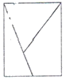
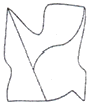
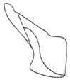
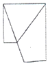
(정답률: 85%)
57. 도로명(ROAD_NAME) 이 봉주로(BONGJURO)인 도로를 STREET 테이블에서 찾과 한다. 이를 위해 기술해야 될 SQL 문으로 옳은 것은?
- SELECT * FROM STREET WHERE "ROAD_NAME" = 'BONGJURO'
- SELECT STREET FROM ROAD_NAME WHERE "BONGJURO"
- SELECT BONGJURO FROM STREET WHERE "ROAD_NAME"
- SELECT * FROM STREET WHERE "BONGJURO" = 'ROAD_NAME'
(정답률: 66%)
58. 공간분석에 있어서 서로 다른 레이어에 속한 공간 데이터들을 Boolean 논리에 입각하여 주어진 조건에 따라 합성된 공간객체를 만드는 것을 무엇이라 하는가?
- 인접성 분석
- 관망 분석
- 중첩 분석
- 버퍼링 분석
(정답률: 83%)
59. GIS 자료 처리(구축) 절차에 대한 순서로 옳은 것은?
- 수집 - 저장 - 자료관리 - 검색
- 수집 - 자료관리 - 검색 - 저장
- 자료관리 - 수집 - 저장 - 검색
- 자료관리 - 저장 - 수집 - 검색
(정답률: 77%)
60. GIS 의 자료수집방법으로서 래스터 데이터(격자 데이터)를 얻기 위한 방법과 거리가 먼 것은?
- GPS 위성 측량
- 항공사진으로부터 수치정사사진의 작성
- 다중밴드 위성영상으로부터 토지피복 분류
- 위성영상의 기하보정 및 좌표 등록
(정답률: 38%)
4과목: 측량학
61. UTM 좌표에 관한 설명으로 옳은 것은?
- 각 구역을 경도는 8°, 위도는 6° 로 나누어 투영한다.
- 축척계수는 0.9996 으로 전 지역에서 일정하다.
- 북위 85°부터 남위 85°까지 투영범위를 갖는다.
- 우리나라는 51S ~ 52S 구역에 위치하고 있다.
(정답률: 76%)
62. 교호수준측량을 하여야 하는 경우에 대한 설명으로 옳은 것은?
- 수로, 하천 등의 토량계산을 할 때
- 수준측량의 노선 가운데에 장애물이 있어 시통이 불가능할 때
- 철도, 도로, 수로와 같은 노선측량에서 노선 중심선의 표고를 관측 할 때
- 수준측량의 노선 중 강, 호수, 하천 등이 있어 중간에 레벨을 세울 수 없을 때
(정답률: 72%)
63. 각 측량의 오차 중 망원경을 정위, 반위로 측정하여 평균값을 취함으로써 처리할 수 없는 것은?
- 시준축과 수평축이 직교하지 않는 경우
- 수평축이 연직축에 직교하지 않는 경우
- 연직축이 정확히 연직선에 있지 않는 경우
- 회전축에 대하여 망원경의 위치가 편심되어 있는 경우
(정답률: 78%)
64. 그림과 같이 편각을 측정하였을 때
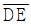
의 방위각은? (단, AB 의 방위각 = 60° 임)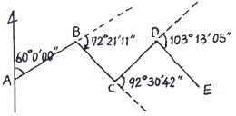
- 235° 34′ 16″
- 143° 03′ 34″
- 314° 34′ 25″
- 140° 13′ ⑤″
(정답률: 81%)
65. 직사각형 토지의 관측값이 가로변 = 100±0.02㎝, 세로변 = 50±0.01㎝ 이었다면 이 토지의 면적에 대한 평균제곱근오차는?
- ±0.707cm2
- ±1.03cm2
- ±1.414cm2
- ±2.06cm2
(정답률: 60%)
66. 지형도에 표시되는 등고선의 종류가 아닌 것은?
- 주곡선
- 간곡선
- 계곡선
- 지성선
(정답률: 85%)
67. 그림과 같이 직접법으로 등고선을 측량하기 위하여 레벨을 세우고 표고가 40.25m 인 A점에 세운 표척을 시준하여 2.65m를 관측했다. 42m인 등고선 위의 점 B에서 시준하여야 할 표척의 높이는?
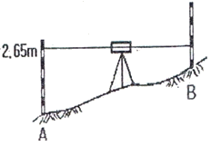
- 0.90m
- 1.40m
- 3.90m
- 4.40m
(정답률: 53%)
68. 다각측량을 실기하고 조정계산을 한 결과, 표와 같은 결과를 얻었다. 폐합도형의 면적을 배횡거법으로 계산할 때 측선 CA의 배횡거는?
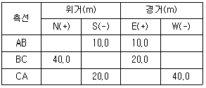
- 20.0m
- 30.0m
- 40.0m
- 50.0m
(정답률: 32%)
69. 450m의 기선을 줄자 50m 줄자로 분할관측할 때 줄자의 1회 관측의 평균제곱근오차가 ±0.01m 이면 이 기선 관측의 평균제곱근오차는?
- ±0.01m
- ±0.03m
- ±0.09m
- ±0.81m
(정답률: 74%)
70. 기포관감도의 표시에 대한 설명으로 옳은 것은?
- 기포관의 두 눈금 이동이 경사각의 크기로 표시되는 각
- 기포관의 길이가 경사각의 크기로 표시되는 각
- 기포 1눈금의 이동에 따른 경사각의 크기로 표시되는 각
- 기포관의 눈금 양단이 경사각의 크기로 표시되는 각
(정답률: 64%)
71. 그림과 같이 기선길이 AB 및 각 α1, β1, α2, β2, α3, β3, α4, β4를 관측하였다고 하면 변 조건식의 수는?
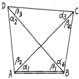
- 1
- 2
- 3
- 4
(정답률: 22%)
72. 오차의 종류 중 확률법칙에 따라 최소제곱법으로 처리하여야 하는 오차는?
- 과오
- 정오차
- 부정오차
- 누적오차
(정답률: 80%)
73. 일반적인 등고선의 특징에 대한 설명으로 옳지 않은 것은?
- 동일 등고선 상의 각 점은 모두 같은 높이이다.
- 폐합되는 등고선의 내부는 산정(山頂) 혹은 분지를 나타낸다.
- 높이가 다른 두 등고선은 절벽이나 동굴의 지형을 제외하고는 교차하거나 만나지 않는다.
- 등고선의 간격은 급경사지에서는 크고 완경사지에서는 작다.
(정답률: 75%)
74. 꼭지점이 A, B, C 이고 대응변이 a, b, c 인 삼각형에서 ∠A = 22° 00′ 56″, ∠C = 80° 21′ 54″, b = 310.95m 일 때 변 a의 길이는?
- 119.34m
- 310.95m
- 313.86m
- 526.09m
(정답률: 50%)
75. 측량ㆍ수로조사 및 지적에 관한 법률에서 사용하는 용어의 정의로 옳지 않은 것은?
- 기본측량 : 모드 측량의 기초가 되는 공간정보를 제공하기 위하여 국토교통부장관이 실시하는 측량
- 공공측량 : 토지를 공공의 장부에 등록하거나 복원하기 위하여 좌표와 면적을 정하는 측량
- 수로측량 : 해양의 수심ㆍ지구자기(地球紫氣)ㆍ중력ㆍ지형ㆍ지질의 측량과 해안선 및 이에 딸린 토지의 측량
- 일반측량 : 기본측량, 공공측량, 지적측량 및 수로측량외의 측량
(정답률: 66%)
76. 1 : 25000 지형도의 조곡선(助曲線) 간격으로 옳은 것은?
- 1m
- 1.25 m
- 2.5m
- 5m
(정답률: 78%)
77. 측량기본계획은 누가 수립하는가?
- 지방자치단체의 장
- 국토교통부장관
- 국토지리정보원장
- 국무총리
(정답률: 72%)
78. 측량업을 폐업한 경우에 측량업자는 그 사유가 발생한 날로부터 최대 며칠 이내에 신고하여야 하는가?
- 10일
- 15일
- 20일
- 30일
(정답률: 86%)
79. 공공측량시행자는 공공측량을 하려면 미리 측량지역, 측량기간, 그 밖에 필요한 사항을 누구에게 통지하여야 하는가?
- 시ㆍ도지사
- 지방국토관리청장
- 국토지리정보원장
- 시장ㆍ군수
(정답률: 83%)
80. 다음 중 기본측량성과의 고시내용이 아닌 것은?
- 측량의 종류
- 측량의 정확도
- 측량성과의 보관 장소
- 측량 작업의 방법
(정답률: 64%)